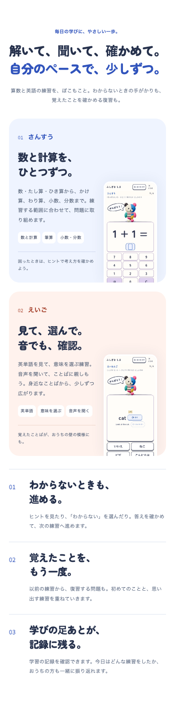
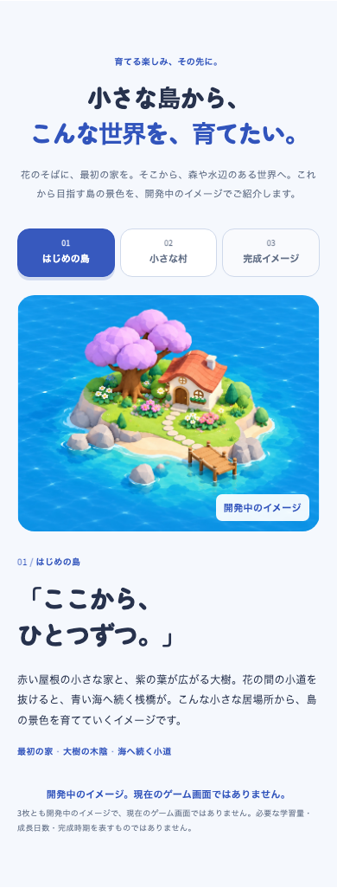
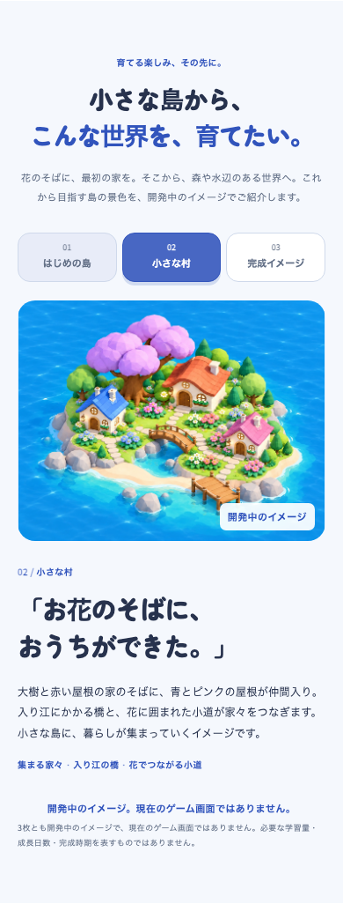
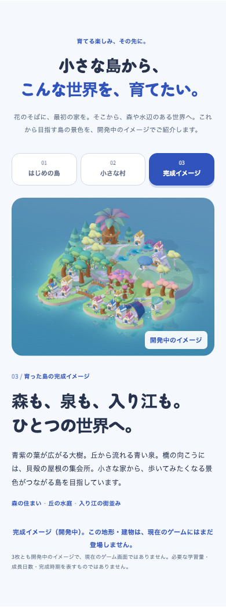
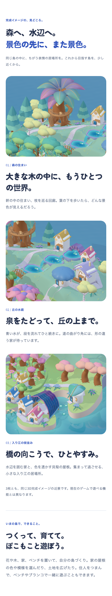

紹介ページの入り江
2026-10-18 · promotion-cove-growth-v4 · ローカルDEVの実表示。新規ブラウザーcontext、SWなし。ゲーム画面ではなく開発中のイメージ。
入口：学習アプリの紹介／390px
算数・英語の実画面／390px
はじめの島／390px
小さな村／390px
3D完成目標／390px
次の紹介：森と水辺／390px ページ全体 · desktopの初期 · desktopの村 · 版と入力hash · ブラウザー検証